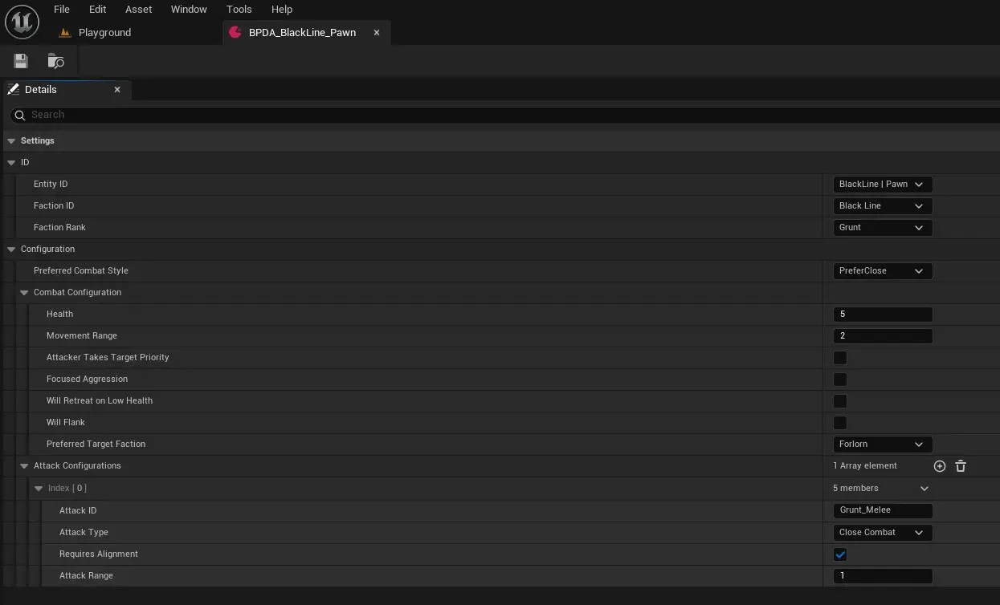

Echronia: Devlog #3
Conor Kirkby
17/01/26

Click to Enlarge
TLDR
- Setup the grid system.
- Created C++ interfaces to handle the function calls well without constant casts and memory loads
- Begun working on the Enemy AI.
- Setup a turn based system to switch between combatant's turns.
- Setup the enemy decision making, including choosing a target, deciding whether to move and then choosing an attack.
- Created a uniformed enemy configuration to be applied to all of the enemy AI on mass.
- Created a pathfinding system using A* to find the most desirable pathway to the target.
- Created a Health component to handle all of the health related code
- Created faction implementation and targeting
- Created a small editor plugin that creates simple grids
What Happened
Hey everyone it has been a little while. I wanted to wait until I had some concrete stuff to show before I did this Devlog. Most of the things I have been working on have been very much backend and do not barely have anything visually to show. This was definitly one of the more challenging aspects to work on so far as it required a lot of maths and intricate systems to work correctly.
To start off last time I had made a raycasting system for the grid functionality and this was definitly the wrong way to go about it. To change this, I created a system that stores all of the active grid pieces and their coordinates then using simple grid maths, the movement, targeting or any other calculations can be simply made. To help this process of communication between so many actors and components, I have created a few interfaces to handle this, a combat interface to handle all combat related function calls and communication. A encounter interface to pass all of the current active grid information to be stored and a health interface to handle all health and damage related code.
Following this I begun work on the Enemy AI, trying to make it as reusable as possible so that it can be used across all AI no matter the configurations or faction. The first step was to create a decision making system when it becomes the enemies turn. The enemy will first choose a target based on some information that they have available e.g. does the enemy prefer to target whoever attacked them, does the enemy prefer ranged or close combat etc... This can be expanded upon in the future but I wish to make it as dynamic as possible. The enemy will then choose an attack based on the target. Should they use a ranged attack or a close attack if they have it available. Then finally the enemy will calculate a pathway to the movement target then move there and then attack!
I really want to include faction combat within my game and so I have divised a faction system that keeps combat interesting and fun. Each enemy belongs to a faction and those enemies may have preferred factions to target. this is taken into account when the decision of who to target comes into play. A combat manager controls the turn order. Each faction has a 'speed' factor which I have given to them based on lore. So if there is multiple factions in play then they will move according to that speed variable, inside the faction turns, the leader will go first and it will move down the ranks. Leader, Lieutenant, Elite, Grunt and they will take their turn orders like this.
The hardest part of this development run was most definitly the pathfinding system. I was not aware of how this worked within grid style games and trying to figure this out took a lot of effort and learning new complicated code. I first started to use a BFS system but I was told an A* system is more performant so I tried to create that one. It took many days and many iterations but I finally got it to work correctly. Which felt amazing when I eventually nailed it down. There are definitly many improvements to be made, espeically with refactoring and tidying up but I am so proud I got this to work.
During this I also learned how to make an Unreal edtior tool which was a lot of fun. The one I made brings up a small UI window that allows the user to create very simple grids based on a width or height. Multiple levels can have many different combat areas and this should allow me to create those areas much faster!
Code *Not working correctly for this devlog*
Combat Data Script
// Created by Snow Paw Games
#pragma once
#include "CoreMinimal.h"
#include "EnemyBehaviour.h"
#include "Components/ActorComponent.h"
#include "Navigation/PathFollowingComponent.h"
#include "CharacterCombatData.generated.h"
struct FAIRequestID;
class ICombatInterface;
class UEnemyBehaviour;
struct FCandidatePathway
{
FIntPoint GridPoint;
int32 Distance = 0;
};
struct FAStarGrid
{
FIntPoint GridPoint;
int32 Cost = 0; // How many steps it will take.
int32 Heuristic = 0; // Distance it will be
int32 Final() const {return Cost + Heuristic;}
};
static bool AStarHeapCheck(const FAStarGrid& PointA, const FAStarGrid& PointB)
{
// We want the lowest possible moves and distance so this organises them by that standard
const int32 AFinal = PointA.Final();
const int32 BFinal = PointB.Final();
if (AFinal != BFinal) return AFinal < BFinal;
return PointA.Heuristic < PointB.Heuristic;
}
UCLASS( ClassGroup=(Custom), meta=(BlueprintSpawnableComponent) )
class TFCOE_API UCharacterCombatData : public UActorComponent
{
GENERATED_BODY()
public:
UCharacterCombatData();
protected:
UPROPERTY(EditAnywhere, BlueprintReadWrite, Category = "Settings")
UEnemyBehaviour* EntityCombatConfiguration;
// The target the AI Will pursue. Not necessary for player
UPROPERTY()
AActor* CurrentTarget = nullptr;
UPROPERTY()
AActor* PreviousAttacker = nullptr;
bool AttackedLastTurn = false;
// Action Points
int32 TimePoints = 10;
UPROPERTY(EditAnywhere, BlueprintReadWrite, Category = "Settings")
int32 MaxTimePoints = 10;
// Movement
UPROPERTY(VisibleAnywhere, BlueprintReadOnly, Category = "Settings")
FIntPoint CurrentGridCoordinates = FIntPoint::ZeroValue;
TArray TurnPath;
int32 TurnPathIndex = 0;
// Interfaces
ICombatInterface* CombatInterfaceGamemode = nullptr;
ICombatInterface* CombatInterfacePlayer = nullptr;
virtual void BeginPlay() override;
public:
// Activates this characters turn.
void ExecuteCurrentTurn();
void EndThisActorTurn() const;
// If AI, it will select a character to target. Most of the time it will be the player.
AActor* SelectTargetForTurn();
// Checks if the character should actually move, is it already next to target etc...
bool CheckShouldMove(const FAttackConfiguration* ChosenAttack, AActor* ChosenTarget);
bool CheckIsAdjacent(FIntPoint& PointA, FIntPoint& PointB) const;
int32 GetGridDistanceAllDir(const FIntPoint& PointA, const FIntPoint& PointB) const;
int32 GetGridDistanceCardinal(const FIntPoint& PointA, const FIntPoint& PointB) const;
bool IsAlignedCardinal(FIntPoint& PointA, FIntPoint& PointB) const;
bool IsAlignedAllDir(FIntPoint& PointA, FIntPoint& PointB) const;
// Stores a chosen attack.
FAttackConfiguration* ChooseAttackForTurn(AActor* TargetActor) const;
FAttackConfiguration* GetAttackFromType(EAttackType AttackType) const;
// AI movement functions
TArray GetReachableMovementPositions(AActor* TargetActor);
TArray ChooseValidMovementPath(const TArray& PossiblePositions, int32 PathwayAttemptModifier);
bool FindPathUsingAStar(FIntPoint& StartCoords, const FIntPoint& TargetCoords, TArray& OutPath) const;
UFUNCTION()
void OnMovementComplete(FAIRequestID RequestID, EPathFollowingResult::Type Result);
void StartMovementAlongGridPath(const TArray& Path);
void MoveToNextGridPos();
FVector GetGridPosition(const FIntPoint& Coordinates) const;
void GetGridAdjacentAllDir(const FIntPoint& OriginCoordinates, TArray& OutNeighbors) const;
// Used to check if the actor has enough action points to move to that spot.
bool CheckCanAffordMovement(FIntPoint CurrentCoordinates, FIntPoint TargetCoordinates);
// The math part to the above function.
int32 CalculateMovementCost(FIntPoint CurrentCoordinates, FIntPoint TargetCoordinates);
FIntPoint CalculateTargetMovementPiece() const;
EFactionID GetFactionID() const;
EEnemyTier GetFactionRank() const;
TArray SortCombatantsByDistance(const TArray& Combatants) const;
TArray GetCombatantsByFaction(TArray CombatantsToCheck, EFactionID FactionToCheck);
AActor* GetTargetFromClosestOrRandom(TArray PotentialTargets, float Weight) const;
void DelayLambda(float DelayTime, TFunction Function);
// Grid Piece checker
bool DoesGridCoordinatesExist(const FIntPoint GridCoordinates) const;
bool IsGridPieceActive(const FIntPoint GridCoordinates) const;
// Getter and Setter //
UFUNCTION(BlueprintCallable, Category = "CombatData")
FIntPoint GetCurrentGridCoordinates() const
{
return CurrentGridCoordinates;
}
UFUNCTION(BlueprintCallable, Category = "CombatData")
void SetCurrentGridCoordinates(const FIntPoint Coordinates)
{
CurrentGridCoordinates = Coordinates;
}
UFUNCTION(BlueprintCallable, Category = "CombatData")
int32 GetTimePoints() const
{
return TimePoints;
}
UFUNCTION(BlueprintCallable, Category = "CombatData")
void SetTimePoints(const int NewTimePoints)
{
TimePoints = NewTimePoints;
}
UFUNCTION(BlueprintCallable, Category = "CombatData")
void ResetTimePoints()
{
TimePoints = MaxTimePoints;
}
int GetHealthConfig() const
{
if (EntityCombatConfiguration)
{
return EntityCombatConfiguration->CombatConfiguration.Health;
}
return 1;
}
};
// Created by Snow Paw Games
#include "CharacterCombatData.h"
#include "AIController.h"
#include "BoardPiece.h"
#include "CombatInterface.h"
#include "HealthInterface.h"
#include "Kismet/GameplayStatics.h"
#include "GameFramework/Character.h"
#include "GameFramework/GameMode.h"
#include "Algo/Reverse.h"
#include "Kismet/KismetMathLibrary.h"
UCharacterCombatData::UCharacterCombatData()
{
PrimaryComponentTick.bCanEverTick = false;
}
void UCharacterCombatData::BeginPlay()
{
Super::BeginPlay();
TimePoints = MaxTimePoints;
// Stores a reference to the game mode interface and player
CombatInterfaceGamemode = Cast(UGameplayStatics::GetGameMode(GetWorld()));
CombatInterfacePlayer = Cast(UGameplayStatics::GetPlayerCharacter(GetWorld(), 0));
}
void UCharacterCombatData::ExecuteCurrentTurn()
{
// Testing for printing health //
IHealthInterface* HealthInterfaceTest = Cast(GetOwner());
UE_LOG(LogTemp, Error, TEXT("Enemy Health this turn: %i"), HealthInterfaceTest->GetHealth());
// Step 1: Select Target for this turn.
CurrentTarget = SelectTargetForTurn();
if (!CurrentTarget)
{
EndThisActorTurn();
return;
}
// FOR TESTING STEP 1 //
UE_LOG(LogTemp, Error, TEXT("Current Target is: %s"), *CurrentTarget->GetName());
// Step 2: Choose an attack
FAttackConfiguration* CurrentAttack = ChooseAttackForTurn(CurrentTarget);
if (!CurrentAttack)
{
EndThisActorTurn();
return;
}
// TESTING STEP 2 //
UE_LOG(LogTemp, Error, TEXT("Chosen Attack: %s"), *CurrentAttack->AttackID.ToString());
// Step 3: Check if the actor should move
if (CheckShouldMove(CurrentAttack, CurrentTarget))
{
// Step 3.5: Movement
const TArray PossibleLocations = GetReachableMovementPositions(CurrentTarget);
const TArray CalculatedPathway = ChooseValidMovementPath(PossibleLocations, 0);
StartMovementAlongGridPath(CalculatedPathway);
}
// Step 4: Attack
}
AActor* UCharacterCombatData::SelectTargetForTurn()
{
// TODO - Chunky function needs to be made into helper functions
if (!CombatInterfaceGamemode) return nullptr;
if (!CombatInterfacePlayer) return nullptr;
AActor* PlayerCombatant = CombatInterfacePlayer->GetPlayerCombatant();
if (!PlayerCombatant) return nullptr;
// Checks if the characters combat config settings are present, if not just default target the player.
if (!EntityCombatConfiguration)
{
UE_LOG(LogTemp, Error, TEXT("Combat Data: Select Target for Turn - Combat Configuration Missing / Not set"))
return PlayerCombatant;
}
// Gets preferred target faction from config
const EFactionID PreferredFaction = EntityCombatConfiguration->CombatConfiguration.PreferredTargetFaction;
// Gets the current combats combatants from the gamemode
TArray CachedActiveCombatants = CombatInterfaceGamemode->GetActiveCombatantRoster();
if (CachedActiveCombatants.IsEmpty()) return PlayerCombatant;
// Checks to make sure the owner of this isn't in the list of possible targets
CachedActiveCombatants.Remove(this->GetOwner());
// This acts as a failsafe, for whatever reason if the active combatants is empty after removing the current turns' actor. It won't crash.
if (CachedActiveCombatants.IsEmpty()) return PlayerCombatant;
// Creates an array of potential targets to choose from.
TArray PotentialTargets = {};
// Logic Begin //
// The Actor was attacked last turn
if (AttackedLastTurn)
{
// This actor is set to prioritise the attackers so it will automatically target those.
if (EntityCombatConfiguration->CombatConfiguration.bAttackerTakesTargetPriority)
{
// Returns the previous attacker as the new target if this entity is set to prioritise those attackers.
if (PreviousAttacker)
{
// TODO - Make function to set previous attacker
return PreviousAttacker;
}
UE_LOG(LogTemp, Warning, TEXT("Combat Data: Select Target For Turn - No previous Attacker ref set. Auto setting to player combatant"))
return PlayerCombatant;
}
// Chance to keep attacking target, If the entity has focused aggression, very little chance to change target, otherwise normal chance
float ChanceToChangeTarget = EntityCombatConfiguration->CombatConfiguration.bFocusedAggression ? 0.05F : 0.30f;
bool bShouldChangeTarget = FMath::FRand() < ChanceToChangeTarget;
if (CurrentTarget && !bShouldChangeTarget)
{
// Target Current Target
return CurrentTarget;
}
// Makes sure this entity actually has a preferred faction to target and if not it will prioritise others.
if (PreferredFaction != EFactionID::None)
{
// Gets the targets of these actors preferred target faction. Also checks that there are faction members of present. Otherwise, this will return empty.
PotentialTargets = GetCombatantsByFaction(CachedActiveCombatants, PreferredFaction);
// Chooses either the closest faction member or random. Weight: Closest 70% / Random 30%
if (!PotentialTargets.IsEmpty())
{
if ( AActor* PotentialFactionTarget = GetTargetFromClosestOrRandom(PotentialTargets, 0.70f))
{
return PotentialFactionTarget;
}
}
// None of the preferred faction is available so just go after the closest or random //
// Chooses either the closest member or random. Weight: Closest 70% / Random 30%
if (AActor* PotentialTarget = GetTargetFromClosestOrRandom(CachedActiveCombatants, 0.70f))
{
return PotentialTarget;
}
// If all this fails for whatever reason, just target the player.
return PlayerCombatant;
}
// The Preferred Faction is none //
// Target Player or Players party with weight 80/20 depending on the last attacker.
if (FMath::FRand() < 0.80f)
{
// Target Player
return PlayerCombatant;
}
// Target Party //
// Gets the party members from the active combatants.
PotentialTargets = GetCombatantsByFaction(CachedActiveCombatants, EFactionID::PlayerParty);
if (!PotentialTargets.IsEmpty())
{
const int32 RandIndex = FMath::RandRange(0, PotentialTargets.Num() - 1);
return PotentialTargets[RandIndex];
}
// If all of this functionality fails, default to targeting the player character.
return PlayerCombatant;
}
// Was not attacked last turn, choose a target.
float ChanceToChangeTarget = EntityCombatConfiguration->CombatConfiguration.bFocusedAggression ? 0.05F : 0.15f;
bool bShouldChangeTarget = FMath::FRand() < ChanceToChangeTarget;
if (CurrentTarget && !bShouldChangeTarget)
{
// Target Current Target
return CurrentTarget;
}
// Else should either change target / select new target //
if (PreferredFaction != EFactionID::None)
{
// Try looking for preferred faction.
PotentialTargets = GetCombatantsByFaction(CachedActiveCombatants, PreferredFaction);
// Chooses either the closest faction member or random. Weight: Closest 70% / Random 30%
if (!PotentialTargets.IsEmpty())
{
if (AActor* PotentialTarget = GetTargetFromClosestOrRandom(PotentialTargets, 0.70f))
{
return PotentialTarget;
}
}
}
// Else if no preferred faction target closest or player //
// Get whoever is closest from player and companions then choose them.
// Gets the party members from the active combatants.
PotentialTargets = GetCombatantsByFaction(CachedActiveCombatants, EFactionID::PlayerParty);
PotentialTargets.Add(PlayerCombatant);
if (!PotentialTargets.IsEmpty())
{
if (AActor* PotentialTarget = GetTargetFromClosestOrRandom(PotentialTargets, 0.80f))
{
return PotentialTarget;
}
// If the actor fails, then just get a random one from the index.
const int32 RandIndex = FMath::RandRange(0, PotentialTargets.Num() - 1);
return PotentialTargets[RandIndex];
}
// If all of this functionality fails, default to targeting the player character.
return PlayerCombatant;
}
bool UCharacterCombatData::CheckShouldMove(const FAttackConfiguration* ChosenAttack, AActor* ChosenTarget)
{
if (!EntityCombatConfiguration || !ChosenAttack || !ChosenTarget)
{
UE_LOG(LogTemp, Error, TEXT("Combat Data: CheckShouldMove - Reference failure"));
return false;
}
ICombatInterface* CombatInterfaceTarget = Cast(ChosenTarget);
if (CombatInterfaceTarget == nullptr) return false;
FIntPoint TargetCoordinates = CombatInterfaceTarget->GetGridCoordinates();
int DistToTarget = GetGridDistanceAllDir(CurrentGridCoordinates, TargetCoordinates);
// Checks if this attack requires alignment, if it does then it will immediately tell it to move
if (ChosenAttack->RequiresAlignment)
{
if (!IsAlignedAllDir(CurrentGridCoordinates, TargetCoordinates))
{
return true;
}
}
// If it is already aligned or otherwise doesn't require alignment, then it will continue
switch (ChosenAttack->AttackType)
{
case EAttackType::Close:
{
const int32 AttackRange = ChosenAttack->AttackRange;
return DistToTarget > AttackRange;
}
case EAttackType::Ranged:
{
const int32 MinRange = ChosenAttack->AttackRange;
const int32 MaxRange = ChosenAttack->MaxAttackRange;
return (DistToTarget < MinRange) || (DistToTarget > MaxRange);
}
}
return false;
}
FAttackConfiguration* UCharacterCombatData::ChooseAttackForTurn(AActor* TargetActor) const
{
if (!TargetActor || !EntityCombatConfiguration || EntityCombatConfiguration->AttackConfigurations.IsEmpty())
{
UE_LOG(LogTemp, Error, TEXT("Combat Data: Choose Attack - Reference fail"));
return nullptr;
}
// Gets the targets interface to get the grid coordinates.
ICombatInterface* CombatInterfaceTarget = Cast(TargetActor);
if (!CombatInterfaceTarget) return nullptr;
// Gets the targets coordinates.
const FIntPoint TargetCoordinates = CombatInterfaceTarget->GetGridCoordinates();
// Gets these actors preferred combat style.
const ECombatStyle PreferredCombatStyle = EntityCombatConfiguration->PreferredCombatStyle;
const int32 DistToTarget = GetGridDistanceAllDir(CurrentGridCoordinates, TargetCoordinates);
// Creates an attack type to chose based on distance. If this actor is far, use ranged, if not move close.
EAttackType TargetAttackToUse = (DistToTarget > 1) ? EAttackType::Ranged : EAttackType::Close;
// Considers if the actor has a preferred style of attack. Will usually only be close or ranged.
switch (PreferredCombatStyle)
{
case ECombatStyle::Any:
break;
case ECombatStyle::PreferClose:
// 90% Chance to be a close attack
if (FMath::FRand() < 0.90f) TargetAttackToUse = EAttackType::Close;
break;
case ECombatStyle::PreferRanged:
// 90% Chance to be a ranged attack
if (FMath::FRand() < 0.90f) TargetAttackToUse = EAttackType::Ranged;
break;
}
// After that, it will get attempt to get a random attack from the priority list, if there is no attacks it will just choose at random.
return GetAttackFromType(TargetAttackToUse);
}
FAttackConfiguration* UCharacterCombatData::GetAttackFromType(const EAttackType AttackType) const
{
if (EntityCombatConfiguration->AttackConfigurations.IsEmpty())
{
UE_LOG(LogTemp, Error, TEXT("Combat Data - Get Attack from type - No attack configurations available"))
return nullptr;
}
// Caches the attacks this actor has to sort through.
TArray& CachedAttacks = EntityCombatConfiguration->AttackConfigurations;
if (CachedAttacks.IsEmpty()) return nullptr;
TArray DesiredAttacks;
// Sorts through the attacks to add the priority attacks to be returned.
for (FAttackConfiguration& Attack : CachedAttacks)
{
if (Attack.AttackType == AttackType)
{
DesiredAttacks.Add(&Attack);
}
}
// If it's not empty, that means preferred attacks do exist and uses them as a priority.
if (!DesiredAttacks.IsEmpty())
{
const int32 RandIndex = FMath::RandRange(0, DesiredAttacks.Num() - 1);
return DesiredAttacks[RandIndex];
}
// Choose any attack.
const int32 RandIndex = FMath::RandRange(0, CachedAttacks.Num() - 1);
return &CachedAttacks[RandIndex];
}
TArray UCharacterCombatData::GetReachableMovementPositions(AActor* TargetActor)
{
TArray FailsafeStruct = {{CurrentGridCoordinates, 0}};
if (!TargetActor || !EntityCombatConfiguration)
{
UE_LOG(LogTemp, Error, TEXT("Combat Data: Choose Movement Position - Reference fail"));
return FailsafeStruct;
}
// Gets the interface for the target
ICombatInterface* CombatInterfaceTarget = Cast(TargetActor);
if (!CombatInterfaceTarget) return FailsafeStruct;
// Gets the coordinates of the grid the target is stood on
FIntPoint TargetCoordinates = CombatInterfaceTarget->GetGridCoordinates();
// Sets an array to check whether
TArray CoordinatesToAttempt;
TArray SuccessfulCandidates;
// Populates the array with the grid pieces around the
GetGridAdjacentAllDir(TargetCoordinates, CoordinatesToAttempt);
if (CoordinatesToAttempt.IsEmpty()) return FailsafeStruct;
// Sorts through the coordinates to check to see which
for (auto Coordinates : CoordinatesToAttempt)
{
if (!DoesGridCoordinatesExist(Coordinates)) continue;
if (!IsGridPieceActive(Coordinates)) continue;
// Culls the non-existent or occupied coordinates.
SuccessfulCandidates.Add(Coordinates);
}
if (SuccessfulCandidates.IsEmpty()) return FailsafeStruct;
// Creates an array of those structs to prepare for storage
TArray ReachableGridPositions;
ReachableGridPositions.Reserve(SuccessfulCandidates.Num());
// Calculates a path to the position and how many steps it will take to reach that. Then store it in the array.
for (FIntPoint& Candidate : SuccessfulCandidates)
{
int32 Distance = GetGridDistanceAllDir(CurrentGridCoordinates, Candidate);
ReachableGridPositions.Add({Candidate, Distance});
}
if (ReachableGridPositions.IsEmpty()) return FailsafeStruct;
// Sorts the structs based on how fewer steps it will take to reach, the less, the lower in the array.
ReachableGridPositions.Sort([](const FCandidatePathway& PathA, const FCandidatePathway& PathB)
{
if (PathA.Distance != PathB.Distance) return PathA.Distance < PathB.Distance;
if (PathA.GridPoint.X != PathB.GridPoint.X) return PathA.GridPoint.X < PathB.GridPoint.X;
return PathA.GridPoint.Y < PathB.GridPoint.Y;
});
// Returns the struct with the least amount of steps,
return ReachableGridPositions;
}
TArray UCharacterCombatData::ChooseValidMovementPath(const TArray& PossiblePositions, const int32 PathwayAttemptModifier)
{
if (PossiblePositions.IsEmpty()) return {CurrentGridCoordinates};
if (!EntityCombatConfiguration) return {CurrentGridCoordinates};
// This is the current attempt of tries
int32 AttemptIndex = PathwayAttemptModifier;
// It gets the attempt of what should be the closest grid point to the target.
int32 ClosestDistance = PossiblePositions[AttemptIndex].Distance;
// This for loop checks the distances and if the closest distance has similar ones, It will choose one at random to be a little more dynamic
TArray TempSimilarDistances;
for (const FCandidatePathway Pos : PossiblePositions)
{
if (Pos.Distance == ClosestDistance)
{
TempSimilarDistances.Add(Pos.GridPoint);
}
}
// Then gets a random one from that array to look into.
int32 RandIndex = FMath::RandRange(0, TempSimilarDistances.Num() - 1);
const FIntPoint TargetCoordinatesForMove = PossiblePositions[RandIndex].GridPoint;
UE_LOG(LogTemp, Error, TEXT("Movement Target: %i, %i"), TargetCoordinatesForMove.X, TargetCoordinatesForMove.Y);
// Calculates a valid path to that point. If it cannot be reached, it isn't valid
TArray PathToFollow;
if (FindPathUsingAStar(CurrentGridCoordinates, TargetCoordinatesForMove, PathToFollow))
{
int32 MovementSpeed = EntityCombatConfiguration->CombatConfiguration.MovementRange;
// Checks that the movement speed isn't zero or there isn't a path.
if (MovementSpeed <= 0 || PathToFollow.Num() <= 1)
{
return {CurrentGridCoordinates};;
}
// Configures the path so that it can only move depending on its movement speed.
const int32 ConfiguredMovements = FMath::Min(PathToFollow.Num(), MovementSpeed + 1);
PathToFollow.SetNum(ConfiguredMovements);
return PathToFollow;
}
// If this location did not have a valid path, then try again. Will iterate through the entire array of possibilities, otherwise don't move.
AttemptIndex++;
if (AttemptIndex >= PossiblePositions.Num()) return {CurrentGridCoordinates};
return ChooseValidMovementPath(PossiblePositions, AttemptIndex);
}
int32 UCharacterCombatData::CalculateMovementCost(const FIntPoint CurrentCoordinates,
const FIntPoint TargetCoordinates)
{
// Uses the Chebyshev method to calculate action cost.
// Gets the absolute number because I don't care the direction of movement only the distance.
const int32 DeltaX = FMath::Abs(TargetCoordinates.X - CurrentCoordinates.X);
const int32 DeltaY = FMath::Abs(TargetCoordinates.Y - CurrentCoordinates.Y);
// Gets the max number between the two variables so it can calculate the max amount of cost on the axis.
return FMath::Max(DeltaX, DeltaY);
}
FIntPoint UCharacterCombatData::CalculateTargetMovementPiece() const
{
if (!CombatInterfacePlayer || !CombatInterfaceGamemode) return FIntPoint(1,1);
const FIntPoint PlayerCoordinates = CombatInterfacePlayer->GetGridCoordinates();
FIntPoint TargetCoordinates = PlayerCoordinates;
const FIntPoint DirToTarget = FIntPoint(PlayerCoordinates.X - CurrentGridCoordinates.X, PlayerCoordinates.Y - CurrentGridCoordinates.Y);
// Calculates which piece should be the target of this actor.
if (FMath::Abs(DirToTarget.X) > FMath::Abs(DirToTarget.Y))
{
if (DirToTarget.X < 0)
{
// Player is to the left of this enemy, move target to the right of player.
TargetCoordinates.X += 1;
}
else
{
// Player is to the right of this enemy, move target to the left of player.
TargetCoordinates.X -= 1;
}
// If it has chosen this route, get the piece coordinates and return them to the function. (WHAT IF IT CANNOT MOVE AT ALL? IS THIS FLAWED)
AActor* TargetPiece = CombatInterfaceGamemode->GetGridPieceFromCoordinates(TargetCoordinates);
if (!TargetPiece) return FIntPoint(1,1);
// Gets the interface of the piece and makes sure it is a piece that can be moved to.
if (ICombatInterface* CombatInterfaceChosenPiece = Cast(TargetPiece))
{
if (CombatInterfaceChosenPiece->GetCurrentPieceState() == EPieceState::Enabled)
{
return TargetCoordinates;
}
else
{
// TODO - Make function to get different target if the piece is not usable
}
}
}
else
{
if (DirToTarget.Y < 0)
{
// The Player is below this enemy, move target to above the player.
TargetCoordinates.Y += 1;
}
else
{
// The Player is Above this enemy, move target to below the player.
TargetCoordinates.Y -= 1;
}
// If it has chosen this route, get the piece coordinates and return them to the function. (WHAT IF IT CANNOT MOVE AT ALL? IS THIS FLAWED)
AActor* TargetPiece = CombatInterfaceGamemode->GetGridPieceFromCoordinates(TargetCoordinates);
if (!TargetPiece) return FIntPoint(1,1);
// Gets the interface of the piece and makes sure it is a piece that can be moved to.
if (ICombatInterface* CombatInterfaceChosenPiece = Cast(TargetPiece))
{
if (CombatInterfaceChosenPiece->GetCurrentPieceState() == EPieceState::Enabled)
{
return TargetCoordinates;
}
else
{
// TODO - Make function to get different target if the piece is not usable
}
}
}
return FIntPoint(1,1);
}
EFactionID UCharacterCombatData::GetFactionID() const
{
if (EntityCombatConfiguration)
{
return EntityCombatConfiguration->FactionID;
}
UE_LOG(LogTemp, Error, TEXT("Combat Data: Get Faction ID - No Combat Configuration Set"))
return EFactionID::None;
}
EEnemyTier UCharacterCombatData::GetFactionRank() const
{
if (EntityCombatConfiguration)
{
return EntityCombatConfiguration->FactionRank;
}
UE_LOG(LogTemp, Error, TEXT("Combat Data: Get Faction Rank - No Combat Configuration Set"))
return EEnemyTier::Grunt;
}
TArray UCharacterCombatData::SortCombatantsByDistance(const TArray& Combatants) const
{
if (Combatants.IsEmpty()) return TArray();
// Creates a new array based from the combatants to be sorted through
TArray SortedCombatants = Combatants;
TMap CachedDistances;
// Sorts through the array to get the current distances and stores the distances in the map
for (auto Combatant : SortedCombatants)
{
// Gets the interface for each combatant
ICombatInterface* CombatInterface = Cast(Combatant);
if (!CombatInterface) continue;
// Gets the current coordinates from the combatants
const FIntPoint Coords = CombatInterface->GetGridCoordinates();
// Calculates the distance in grid pieces from the current entity to these combatants and then stores them.
CachedDistances.Add(Combatant, FMath::Abs(Coords.X - CurrentGridCoordinates.X) + FMath::Abs(Coords.Y - CurrentGridCoordinates.Y));
}
// Once the distances have been calculated and stored, it will sort the array from closest to furthest and returns it.
SortedCombatants.Sort([&CachedDistances](const AActor& A, const AActor& B)
{
return CachedDistances[&A] < CachedDistances[&B];
});
return SortedCombatants;
}
TArray UCharacterCombatData::GetCombatantsByFaction(TArray CombatantsToCheck, const EFactionID FactionToCheck)
{
if (CombatantsToCheck.IsEmpty()) return TArray();
// Creates an array to store the potential faction targets.
TArray PotentialTargets = {};
// Cycles through the combatants and checks their faction ID against the preferred faction
for (auto Combatant : CombatantsToCheck)
{
ICombatInterface* CombatInterfaceCombatant = Cast(Combatant);
if (!CombatInterfaceCombatant) continue;
// Gets a combatants faction ID
EFactionID CombatantsFaction = CombatInterfaceCombatant->GetActorFactionID();
// Checks the faction ID against the preferred faction
if (CombatantsFaction == FactionToCheck)
{
PotentialTargets.Add(Combatant);
}
}
if (!PotentialTargets.IsEmpty())
{
return PotentialTargets;
}
return TArray();
}
AActor* UCharacterCombatData::GetTargetFromClosestOrRandom(TArray PotentialTargets, const float Weight) const
{
if (PotentialTargets.IsEmpty()) return nullptr;
// Chooses either the closest faction member or random. Weight: Closest 70% / Random 30%
if (FMath::FRand() < Weight)
{
// Target Closest Enemy
TArray DistanceSortedPotentialTargets = SortCombatantsByDistance(PotentialTargets);
return DistanceSortedPotentialTargets[0];
}
// Target Random Enemy. Gets a random enemy and sets that to be the target#
if (!PotentialTargets.IsEmpty())
{
const int32 RandIndex = FMath::RandRange(0, PotentialTargets.Num() - 1);
return PotentialTargets[RandIndex];
}
UE_LOG(LogTemp, Error, TEXT("Combat Data: Get Target From Closest or Random - Complete function fail"))
return nullptr;
}
void UCharacterCombatData::DelayLambda(const float DelayTime, TFunction Function)
{
TWeakObjectPtr SafeThis = this;
FTimerHandle TimerHandle;
UWorld* World = GetWorld();
if (!World) return;
GetWorld()->GetTimerManager().SetTimer(TimerHandle, [SafeThis, Function]()
{
if (!SafeThis.IsValid()) return;
Function();
},DelayTime, false);
}
bool UCharacterCombatData::CheckCanAffordMovement(const FIntPoint CurrentCoordinates, const FIntPoint TargetCoordinates)
{
const int32 CostToMove = CalculateMovementCost(CurrentCoordinates, TargetCoordinates);
// Checks if both the combatant has time points left and also the cost doesn't exceed the amount left.
if (TimePoints > 0 && CostToMove <= TimePoints)
{
// Removes the time points from the pool
SetTimePoints(FMath::Clamp(TimePoints - CostToMove, 0, MaxTimePoints));
return true;
}
return false;
}
void UCharacterCombatData::EndThisActorTurn() const
{
// Tells the gamemode that this actor has finished its turn and to then cycle to the next enemy turn.
if (CombatInterfaceGamemode)
{
CombatInterfaceGamemode->NotifyEndIndividualTurn();
}
}
bool UCharacterCombatData::CheckIsAdjacent(FIntPoint& PointA, FIntPoint& PointB) const
{
// Gets the absolute value of these and checks that neither are 1, because that means the actor is next to the target.
return GetGridDistanceAllDir(PointA, PointB) == 1;
}
int32 UCharacterCombatData::GetGridDistanceAllDir(const FIntPoint& PointA, const FIntPoint& PointB) const
{
// Uses the Chebyshev method to include Diagonals into the movement consideration
return FMath::Max(FMath::Abs(PointA.X - PointB.X), FMath::Abs(PointA.Y - PointB.Y));
}
int32 UCharacterCombatData::GetGridDistanceCardinal(const FIntPoint& PointA, const FIntPoint& PointB) const
{
// Uses the Manhattan method to check distance using only the up,down,left,right directions.
return FMath::Abs(PointA.X - PointB.X) + FMath::Abs(PointA.Y - PointB.Y);
}
bool UCharacterCombatData::IsAlignedCardinal(FIntPoint& PointA, FIntPoint& PointB) const
{
return (PointA.X == PointB.X || PointA.Y == PointB.Y);
}
bool UCharacterCombatData::IsAlignedAllDir(FIntPoint& PointA, FIntPoint& PointB) const
{
const int32 DeltaX = FMath::Abs(PointA.X - PointB.X);
const int32 DeltaY = FMath::Abs(PointA.Y - PointB.Y);
return (DeltaX == 0) || (DeltaY == 0) || (DeltaX == DeltaY);
}
FVector UCharacterCombatData::GetGridPosition(const FIntPoint& Coordinates) const
{
// Gets the owner in case fail.
const AActor* Owner = GetOwner();
if (!Owner) return FVector::ZeroVector;
if (CombatInterfaceGamemode)
{
if (AActor* GridPiece = CombatInterfaceGamemode->GetGridPieceFromCoordinates(Coordinates))
{
// Gets the interface for the grid piece so we can get its location.
ICombatInterface* CombatInterfaceGrid = Cast(GridPiece);
if (!CombatInterfaceGrid) return Owner->GetActorLocation();
// Returns the board piece location
return CombatInterfaceGrid->GetBoardPieceLocation();
}
// If fails all that or no references. It will return the actors current location so that it will just remain still.
UE_LOG(LogTemp, Warning, TEXT("Combat Data: Get Grid Location - No Grid Piece found."))
return Owner->GetActorLocation();
}
UE_LOG(LogTemp, Warning, TEXT("Combat Data: Get Grid Location - No Gamemode interface found."))
return Owner->GetActorLocation();
}
void UCharacterCombatData::GetGridAdjacentAllDir(const FIntPoint& OriginCoordinates,
TArray& OutNeighbors) const
{
OutNeighbors.Reset(8);
// Adds the four different cardinal directions, Up, down, left, right.
OutNeighbors.Add(OriginCoordinates + FIntPoint(1, 0));
OutNeighbors.Add(OriginCoordinates + FIntPoint(-1, 0));
OutNeighbors.Add(OriginCoordinates + FIntPoint(0, 1));
OutNeighbors.Add(OriginCoordinates + FIntPoint(0, -1));
// Adds the ordinal diagonal directions.
OutNeighbors.Add(OriginCoordinates + FIntPoint(1, 1));
OutNeighbors.Add(OriginCoordinates + FIntPoint(1, -1));
OutNeighbors.Add(OriginCoordinates + FIntPoint(-1, 1));
OutNeighbors.Add(OriginCoordinates + FIntPoint(-1, -1));
}
bool UCharacterCombatData::DoesGridCoordinatesExist(const FIntPoint GridCoordinates) const
{
return CombatInterfaceGamemode->DoesGridContainCoordinate(GridCoordinates);
}
bool UCharacterCombatData::IsGridPieceActive(const FIntPoint GridCoordinates) const
{
//Gets the grid piece so it can check the specific piece for its state.
AActor* GridPiece = CombatInterfaceGamemode->GetGridPieceFromCoordinates(GridCoordinates);
// Gets its interface.
ICombatInterface* CombatInterfaceGridPiece = Cast(GridPiece);
if (!CombatInterfaceGridPiece) return false;
EPieceState State = CombatInterfaceGridPiece->GetCurrentPieceState();
// Checks the piece isn't occupied or non-walkable.
return State != EPieceState::Occupied && State != EPieceState::Disabled;
}
bool UCharacterCombatData::FindPathUsingAStar(FIntPoint& StartCoords, const FIntPoint& TargetCoords,
TArray& OutPath) const
{
OutPath.Reset();
// If the start is the target, it's the current pos already, so just return and don't move.
if (StartCoords == TargetCoords)
{
OutPath.Add(StartCoords);
return true;
}
// Another check if the grid position is a valid position for movement.
if (!DoesGridCoordinatesExist(TargetCoords) || !IsGridPieceActive(TargetCoords))
{
return false;
}
// An array of structs to store the grid positions that will be attempted to sorted through.
TArray ToAttempt;
// A map that stores the coordinates and the cost it will take to move there
TMap DistanceCost;
// A map of previously attempted grid positions, stores the previous location to the current.
TMap PathAttempted;
// A set of the grid position that have been finalised.
TSet Finished;
DistanceCost.Add(StartCoords, 0); // Starting with the current pos of the character.
FAStarGrid StartGrid;
StartGrid.GridPoint = StartCoords;
StartGrid.Cost = 0;
StartGrid.Heuristic = GetGridDistanceAllDir(StartCoords, TargetCoords);
ToAttempt.Add(StartGrid); // The initial attempt, starting from the pos and the cost it will take.
ToAttempt.Heapify(AStarHeapCheck);
// Stores the adjoining grid points to the current grid point attempt.
TArray AdjacentPoints;
AdjacentPoints.Reserve(8);
while (ToAttempt.Num() > 0)
{
// Sets up the current grid position, we will attempt this iteration.
FAStarGrid CurrentGridPos;
ToAttempt.HeapPop(CurrentGridPos, AStarHeapCheck);
FIntPoint CurrentCoordinates = CurrentGridPos.GridPoint;
// If the coordinate has already been checked, do the next.
if (Finished.Contains(CurrentCoordinates))
{continue;}
// If it has reached the target coordinates, it will add it to the path and then reverse it so it can create a stable pathway.
if (CurrentCoordinates == TargetCoords)
{
FIntPoint Step = TargetCoords;
OutPath.Add(Step);
while (Step != StartCoords)
{
Step = PathAttempted[Step];
OutPath.Add(Step);
}
Algo::Reverse(OutPath);
return true;
}
Finished.Add(CurrentCoordinates);
AdjacentPoints.Reset();
GetGridAdjacentAllDir(CurrentCoordinates, AdjacentPoints);
int32 CurrentCost = DistanceCost[CurrentCoordinates];
for (FIntPoint& Point : AdjacentPoints)
{
if (Finished.Contains(Point)) continue;
if (!DoesGridCoordinatesExist(Point)) continue;
// This section is to check if there is a blocked part if the character is trying to go diagonal.
int32 DeltaX = Point.X - CurrentCoordinates.X;
int32 DeltaY = Point.Y - CurrentCoordinates.Y;
if (DeltaX != 0 && DeltaY != 0)
{
// Checks each side from the current path part so that it can check if either or is blocked.
FIntPoint SideA(CurrentCoordinates.X + DeltaX, CurrentCoordinates.Y);
FIntPoint SideB(CurrentCoordinates.X, CurrentCoordinates.Y + DeltaY);
// Performs the checks, will not add this to the path if it is blocked and will go around obstacles instead of cutting through them.
if (!DoesGridCoordinatesExist(SideA) || !DoesGridCoordinatesExist(SideB)) continue;
if (!IsGridPieceActive(SideA) || !IsGridPieceActive(SideB)) continue;
}
if (!IsGridPieceActive(Point)) continue;
int32 PossibleCost = CurrentCost + 1;
int32* ExistingCost = DistanceCost.Find(Point);
if (!ExistingCost || PossibleCost < *ExistingCost)
{
PathAttempted.Add(Point, CurrentCoordinates);
DistanceCost.Add(Point, PossibleCost);
FAStarGrid Grid;
Grid.GridPoint = Point;
Grid.Cost = PossibleCost;
Grid.Heuristic = GetGridDistanceAllDir(Point, TargetCoords);
ToAttempt.HeapPush(Grid, AStarHeapCheck);
}
}
}
return false;
}
void UCharacterCombatData::OnMovementComplete(FAIRequestID RequestID, EPathFollowingResult::Type Result)
{
// If movement for some reason fails, end the turn.
if (Result != EPathFollowingResult::Success)
{
EndThisActorTurn();
return;
}
// Otherwise, increase the movement index and then execute it.
TurnPathIndex++;
MoveToNextGridPos();
}
void UCharacterCombatData::StartMovementAlongGridPath(const TArray& Path)
{
TurnPath = Path;
TurnPathIndex = 1;
MoveToNextGridPos();
}
void UCharacterCombatData::MoveToNextGridPos()
{
if (TurnPathIndex >= TurnPath.Num())
{
// Attack;
// Makes sure that when the AI finishes its movement phase, it is looking at the target.
if (CurrentTarget)
{
GetOwner()->SetActorRotation(UKismetMathLibrary::FindLookAtRotation(GetOwner()->GetActorLocation(),
CurrentTarget->GetActorLocation()));
}
// TODO - Move this to attack pattern instead
// TESTING. If It's not the player, ends the turn. Until attack is implemented.
if (EntityCombatConfiguration->FactionID == EFactionID::BlackLine)
{
EndThisActorTurn();
return;
}
return;
}
// Gets the next grid pos that is lined up from the array of
FIntPoint NextGridPos = TurnPath[TurnPathIndex];
FVector NextMovementLocation = GetGridPosition(NextGridPos);
// Gets the AI Controller needed for movement.
if (ACharacter* Owner = Cast(GetOwner()))
{
if (AAIController* AIController = Cast(Owner->GetController()))
{
// Binds on movement completed to trigger on movement completed to either end movement or move to the next tile.
AIController->ReceiveMoveCompleted.RemoveDynamic(this, &UCharacterCombatData::OnMovementComplete);
AIController->ReceiveMoveCompleted.AddDynamic(this, &UCharacterCombatData::OnMovementComplete);
// Triggers the movement code.
AIController->MoveToLocation(NextMovementLocation, 5.0f, false);
}
}
}
Combat Data Script
Combat Manager Script
// Created by Snow Paw Games
#pragma once
#include "CombatInterface.h"
#include "CoreMinimal.h"
#include "EnemyTier.h"
#include "Components/ActorComponent.h"
#include "CombatManager.generated.h"
class ABoardPiece;
USTRUCT()
struct FFactionTierContainer
{
GENERATED_BODY()
UPROPERTY() TArray FactionLeader;
UPROPERTY() TArray Lieutenant;
UPROPERTY() TArray Elite;
UPROPERTY() TArray Grunt;
};
UENUM(BlueprintType)
enum ETurnOrder
{
Player UMETA(DisplayName = "Player"),
Enemy UMETA(DisplayName = "Enemy"),
Companion UMETA(DisplayName = "Companion"),
None UMETA(DisplayName = "None")
};
UCLASS(ClassGroup=(Custom), meta=(BlueprintSpawnableComponent))
class TFCOE_API UCombatManager : public UActorComponent, public ICombatInterface
{
private:
GENERATED_BODY()
public:
UCombatManager();
protected:
virtual void BeginPlay() override;
UPROPERTY(VisibleAnywhere, BlueprintReadOnly, Category = "Settings|Combat State")
int CurrentCombatState = 0;
UPROPERTY(EditAnywhere, BlueprintReadWrite, Category = "Settings|Turn Order")
TMap> TurnOrder;
// The turn priority's for the individual factions on the enemy turn, which ones will go before the others etc... might be subbed for a different system later
UPROPERTY(EditAnywhere, BlueprintReadWrite, Category = "Settings|Turn Order")
TMap FactionTurnPriority;
UPROPERTY(VisibleAnywhere, BlueprintReadOnly, Category = "Settings|Combatants")
TArray PlayerPartyRoster = {};
UPROPERTY(VisibleAnywhere, BlueprintReadOnly, Category = "Settings|Combatants")
TArray ActiveCombatantRoster = {};
// The map that contains the inner scope of the turn order for each faction, based on the actors rank within that faction.
TMap FactionTurnGroups = {};
// This information is for the turn order as a whole e.g. Player, Companion, Enemy etc...
ETurnOrder CurrentTurnOrder = None;
int CurrentTurnIndex = 1;
// This information is for the enemy turn only. Which factions will execute their turns first.
TArray FactionTurnOrder = {};
EEnemyTier CurrentFactionRankTurn;
int CurrentFactionTurnIndex = 0;
public:
/**
* 0 -> Disengaged
* 1 -> Engaged
* @param CombatState The state to set the combat into.
*/
UFUNCTION(BlueprintCallable, Category="CombatManager")
void SetCombatState(int CombatState);
void SetTurnOrder(int NewTurnOrder);
UFUNCTION(BlueprintCallable, Category="CombatManager")
void EndCurrentTurn();
void ExecuteTurnFunctionality(ETurnOrder NewTurn);
void EndCombat();
void SetActiveCombatants(const TArray& NewCombatants);
void AddActiveCombatant(AActor* NewCombatant);
void ClearActiveCombatants();
void AddPlayerPartyToActiveCombatants();
void QueueFactionGroupsForTurn();
TArray OrderFactionsForTurn();
void ExecuteEnemyTurn();
void ExecuteIndividualEnemyTurn();
/**
* 0 -> Disengaged
* 1 -> Engaged
*/
UFUNCTION(BlueprintCallable, Category="CombatManager")
int GetCombatState() const
{
return CurrentCombatState;
}
UFUNCTION(BlueprintCallable, Category="CombatManager")
ETurnOrder GetCurrentTurnOrder() const
{
return CurrentTurnOrder;
}
UFUNCTION(BlueprintCallable, Category="CombatManager")
int GetCurrentTurnIndex() const
{
return CurrentTurnIndex;
}
TArray GetActiveCombatants() const
{
return ActiveCombatantRoster;
}
// Interface Implementation
void NotifyPlayerOfCombatStatus(int CombatState) const;
virtual ETurnOrder GetCurrentTurnOrder() override {return CurrentTurnOrder;}
// Unneeded Interface Implementations
// Player
virtual void NotifyEndIndividualTurn() override {}
virtual FVector GetCombatPlayerLocation() override {return FVector::ZeroVector;}
virtual AActor* GetPlayerCombatant() override {return nullptr;}
virtual void NotifyMovementRequirementsMet(AActor* BoardPiece) override {}
virtual void NotifyCombatStatus(int CombatState) override {}
virtual void SetCombatantCoordinates(FIntPoint Coordinates) override {}
// Gamemode
virtual FIntPoint GetGridCoordinates() override {return FIntPoint::ZeroValue;}
virtual void NotifyEndTurnTriggered() override {}
virtual void MoveAI_Character(FVector Location) override {}
virtual AActor* GetGridPieceFromCoordinates(FIntPoint Coordinates) override {return nullptr;}
virtual void BeginTurnPhase() override {}
virtual TArray GetActiveCombatantRoster() override {return TArray();}
virtual EFactionID GetActorFactionID() override {return EFactionID::None;}
virtual EEnemyTier GetActorFactionRank() override {return EEnemyTier::Grunt;}
virtual EEntityID GetActorEntityID() override {return EEntityID::Uninitialized_ID;}
// Board Piece
virtual void NotifyPieceClicked() override {}
virtual FVector GetBoardPieceLocation() override {return FVector::ZeroVector;}
virtual EPieceState GetCurrentPieceState() override {return EPieceState();}
virtual bool DoesGridContainCoordinate(FIntPoint CoordsToCheck) override {return false;}
};
// Created by Snow Paw Games
#include "CombatManager.h"
#include "CombatInterface.h"
#include "GameFramework/Character.h"
#include "Kismet/GameplayStatics.h"
UCombatManager::UCombatManager()
{
PrimaryComponentTick.bCanEverTick = false;
}
void UCombatManager::BeginPlay()
{
Super::BeginPlay();
}
void UCombatManager::SetCombatState(const int CombatState)
{
// Tracks the current state of the game
CurrentCombatState = CombatState;
// 0 -> Disengaged
// 1 -> Engaged
switch (CombatState)
{
case 0:
// Notifies the player character of combat end
NotifyPlayerOfCombatStatus(0);
// Ends the combat resetting the values
EndCombat();
break;
case 1:
// Notifies the player character of combat start
NotifyPlayerOfCombatStatus(1);
// Starts the combat and sets the turn order to the first.
SetTurnOrder(1);
break;
default:
NotifyPlayerOfCombatStatus(0);
}
}
void UCombatManager::EndCurrentTurn()
{
// Gets the current turn order and increments it, moving to the next turn.
int TurnIndex = CurrentTurnIndex;
TurnIndex++;
// If the turn order has reached the end, loops back to the initial turn order
if (TurnIndex > 3)
{
TurnIndex = 1;
SetTurnOrder(TurnIndex);
}
// Updates the current turn order.
SetTurnOrder(TurnIndex);
}
void UCombatManager::SetTurnOrder(const int NewTurnOrder)
{
switch (NewTurnOrder)
{
case 1:
// Initial Turn order.
CurrentTurnIndex = 1;
CurrentTurnOrder = TurnOrder.FindRef(1);
break;
case 2:
// Second Turn order
CurrentTurnIndex = 2;
CurrentTurnOrder = TurnOrder.FindRef(2);
break;
case 3:
// Third turn order
CurrentTurnIndex = 3;
CurrentTurnOrder = TurnOrder.FindRef(3);
break;
default:
// Defaults to the initial turn order if for any reason fails.
CurrentTurnIndex = 1;
CurrentTurnOrder = TurnOrder.FindRef(1);
;
}
// After updating the turn order, will execute the relevant functionality.
ExecuteTurnFunctionality(CurrentTurnOrder);
}
void UCombatManager::ExecuteTurnFunctionality(ETurnOrder NewTurn)
{
switch (NewTurn)
{
case Player:
//Tells the player to begin their turn phase.
if (ICombatInterface* CombatInterfacePlayer = Cast(UGameplayStatics::GetPlayerCharacter(GetWorld(), 0)))
{
//CombatInterfacePlayer->BeginTurnPhase();
}
break;
case Enemy:
ExecuteEnemyTurn();
break;
case Companion:
break;
case None:
break;
}
}
void UCombatManager::EndCombat()
{
CurrentTurnIndex = -1;
CurrentTurnOrder = None;
}
// Simply adds the player party to the active combatant roster.
void UCombatManager::AddPlayerPartyToActiveCombatants()
{
// Adds the player to the active combatants
AddActiveCombatant(UGameplayStatics::GetPlayerCharacter(GetWorld(), 0));
// adds the player party to the active combatants
if (PlayerPartyRoster.IsEmpty()) return;
for (const auto Actor : PlayerPartyRoster)
{
AddActiveCombatant(Actor);
}
}
void UCombatManager::ExecuteEnemyTurn()
{
// Clears the turn information from last turn.
FactionTurnGroups.Empty();
// Queues the new information for this turn. Populates the faction groups with each respective combatants.
QueueFactionGroupsForTurn();
// Sorts which factions should be going before the others.
FactionTurnOrder = OrderFactionsForTurn();
// Sets up the iteration. Makes sure that the rank turn is set to which I desire to go first. I want the leaders to go first.
CurrentFactionTurnIndex = 0;
CurrentFactionRankTurn = EEnemyTier::Faction_Leader;
// Iterates through the factions and then the ranks and activates the enemies turns.
ExecuteIndividualEnemyTurn();
}
void UCombatManager::QueueFactionGroupsForTurn()
{
for (auto Combatant : ActiveCombatantRoster)
{
ICombatInterface* CombatInterface = Cast(Combatant);
if (!CombatInterface) continue;
EFactionID FactionID = CombatInterface->GetActorFactionID();
if (FactionID == EFactionID::Player || FactionID == EFactionID::PlayerParty)
{
// Do not want the players party here as its enemies only.
continue;
}
// Gets the enemy rank so it can be sorted
EEnemyTier EnemyRank = CombatInterface->GetActorFactionRank();
FFactionTierContainer& Container = FactionTurnGroups.FindOrAdd(FactionID);
switch (EnemyRank)
{
case EEnemyTier::Faction_Leader:
Container.FactionLeader.Add(Combatant);
break;
case EEnemyTier::Lieutenant:
Container.Lieutenant.Add(Combatant);
break;
case EEnemyTier::Elite:
Container.Elite.Add(Combatant);
break;
case EEnemyTier::Grunt:
Container.Grunt.Add(Combatant);
break;
}
}
}
TArray UCombatManager::OrderFactionsForTurn()
{
TArray FactionsToSort;
// Checks to see both what factions are available this combat and check the faction has actors stored
for (const auto& Pair : FactionTurnGroups)
{
EFactionID FactionID = Pair.Key;
// This makes sure the faction actually has a member inside and not empty.
const auto& [FactionLeader, Lieutenant, Elite, Grunt] = Pair.Value;
if (FactionLeader.Num() + Lieutenant.Num() + Elite.Num() + Grunt.Num() > 0)
{
FactionsToSort.Add(FactionID);
}
}
// This creates a priority system to check which faction has priority, right now they are simply ordered on what I believe is the best lore wise.
// This may be changed to be more attribute dependent in future.
TMap PriorityMap = {
{EFactionID::Forlorn, FactionTurnPriority.Contains(EFactionID::Forlorn) ? FactionTurnPriority.FindRef(EFactionID::Forlorn) : 1},
{EFactionID::BlackLine, FactionTurnPriority.Contains(EFactionID::BlackLine) ? FactionTurnPriority.FindRef(EFactionID::BlackLine) : 3},
{EFactionID::EmpireOfEos, FactionTurnPriority.Contains(EFactionID::EmpireOfEos) ? FactionTurnPriority.FindRef(EFactionID::EmpireOfEos) : 4},
{EFactionID::Creature, FactionTurnPriority.Contains(EFactionID::Creature) ? FactionTurnPriority.FindRef(EFactionID::Creature) : 2}
};
// Sorts the entries based on the above criteria. Then returns the ordered factions to be used in the turn route.
FactionsToSort.Sort([this, &PriorityMap](const EFactionID& FactionA, const EFactionID& FactionB)
{
const int PriorityA = PriorityMap.Contains(FactionA) ? PriorityMap[FactionA] : 999;
const int PriorityB = PriorityMap.Contains(FactionB) ? PriorityMap[FactionB] : 999;
return PriorityA < PriorityB;
});
return FactionsToSort;
}
void UCombatManager::ExecuteIndividualEnemyTurn()
{
// If no more enemies in the faction list then enemy turn will be complete.
if (CurrentFactionTurnIndex >= FactionTurnOrder.Num())
{
EndCurrentTurn();
return;
}
EFactionID CurrentFactionTurn = FactionTurnOrder[CurrentFactionTurnIndex];
FFactionTierContainer& FactionContainer = FactionTurnGroups.FindOrAdd(CurrentFactionTurn);
// This is to get the current factions rank list of enemies.
TArray* PoppedFactionRanksToAct = nullptr;
// Gets the actors of the specific faction rank to act depending on which is next
switch (CurrentFactionRankTurn)
{
case EEnemyTier::Grunt:
PoppedFactionRanksToAct = &FactionContainer.Grunt;
break;
case EEnemyTier::Elite:
PoppedFactionRanksToAct = &FactionContainer.Elite;
break;
case EEnemyTier::Lieutenant:
PoppedFactionRanksToAct = &FactionContainer.Lieutenant;
break;
case EEnemyTier::Faction_Leader:
PoppedFactionRanksToAct = &FactionContainer.FactionLeader;
break;
}
// Checks if it has finished the current ranks enemies before moving onto the next
if (!PoppedFactionRanksToAct || PoppedFactionRanksToAct->Num() == 0)
{
// Checks if it has finished this faction as a whole.
if (CurrentFactionRankTurn == EEnemyTier::Grunt)
{
// If the faction has finished, increase the turn index and reset the rank order
CurrentFactionTurnIndex++;
CurrentFactionRankTurn = EEnemyTier::Faction_Leader;
}
else
{
// Increase the faction rank to iterate through. Leader -> Lieutenant -> Elite etc...
CurrentFactionRankTurn = static_cast(StaticCast(CurrentFactionRankTurn) + 1);
}
ExecuteIndividualEnemyTurn();
return;
}
AActor* NextEnemy = PoppedFactionRanksToAct->Pop();
if (!NextEnemy)
{
ExecuteIndividualEnemyTurn();
return;
}
if (ICombatInterface* CombatInterfaceEnemy = Cast(NextEnemy))
{
CombatInterfaceEnemy->BeginTurnPhase();
}
}
// Function to send an interface message to the player stating what the combat status is.
void UCombatManager::NotifyPlayerOfCombatStatus(const int CombatState) const
{
if (ICombatInterface* CombatInterface = Cast(UGameplayStatics::GetPlayerCharacter(GetWorld(), 0)))
{
CombatInterface->NotifyCombatStatus(CombatState);
}
}
void UCombatManager::SetActiveCombatants(const TArray& NewCombatants)
{
ActiveCombatantRoster = NewCombatants;
}
void UCombatManager::AddActiveCombatant(AActor* NewCombatant)
{
if (!NewCombatant) return;
ActiveCombatantRoster.Add(NewCombatant);
}
void UCombatManager::ClearActiveCombatants()
{
ActiveCombatantRoster.Empty();
}
Combat Manager Script
Enemy Behaviour Script
// Created by Snow Paw Games
#pragma once
#include "CoreMinimal.h"
#include "AttackConfiguration.h"
#include "CombatConfiguration.h"
#include "EnemyTier.h"
#include "Engine/DataAsset.h"
#include "EnemyBehaviour.generated.h"
struct FAttackConfiguration;
struct FCombatConfiguration;
enum class EFactionID : uint8;
enum class EEntityID : uint8;
UENUM()
enum class ECombatStyle : uint8
{
Any UMETA(DisplayName = "Any"),
PreferClose UMETA(DisplayName = "PreferClose"),
PreferRanged UMETA(DisplayName = "PreferRanged")
};
/**
*
*/
UCLASS()
class TFCOE_API UEnemyBehaviour : public UDataAsset
{
GENERATED_BODY()
public:
UPROPERTY(EditAnywhere, BlueprintReadWrite, Category = "Settings|ID")
EEntityID EntityID;
UPROPERTY(EditAnywhere, BlueprintReadWrite, Category = "Settings|ID")
EFactionID FactionID;
UPROPERTY(EditAnywhere, BlueprintReadWrite, Category = "Settings|ID")
EEnemyTier FactionRank = EEnemyTier::Grunt;
UPROPERTY(EditAnywhere, BlueprintReadWrite, Category = "Settings|Configuration")
ECombatStyle PreferredCombatStyle = ECombatStyle::Any;
UPROPERTY(EditAnywhere, BlueprintReadWrite, Category = "Settings|Configuration")
FCombatConfiguration CombatConfiguration;
UPROPERTY(EditAnywhere, BlueprintReadWrite, Category = "Settings|Configuration")
TArray AttackConfigurations;
};
Enemy Behaviour Script
Combat Configuration Script
// Created by Snow Paw Games
#pragma once
#include "CoreMinimal.h"
#include "FactionID.h"
#include "CombatConfiguration.generated.h"
USTRUCT(BlueprintType)
struct FCombatConfiguration
{
GENERATED_BODY()
UPROPERTY(EditAnywhere, BlueprintReadWrite, Category = "Settings")
int Health = 10;
UPROPERTY(EditAnywhere, BlueprintReadWrite, Category = "Settings")
int MovementRange = 1;
UPROPERTY(EditAnywhere, BlueprintReadWrite, Category = "Settings")
bool bAttackerTakesTargetPriority = false;
UPROPERTY(EditAnywhere, BlueprintReadWrite, Category = "Settings")
bool bFocusedAggression = false;
UPROPERTY(EditAnywhere, BlueprintReadWrite, Category = "Settings")
bool bWillRetreatOnLowHealth = false;
UPROPERTY(EditAnywhere, BlueprintReadWrite, Category = "Settings")
bool bWillFlank = false;
UPROPERTY(EditAnywhere, BlueprintReadWrite, Category = "Settings")
EFactionID PreferredTargetFaction = EFactionID::PlayerParty;
};
Combat Configuration Script
Attack Configuration Script
// Created by Snow Paw Games
#pragma once
#include "CoreMinimal.h"
#include "AttackConfiguration.generated.h"
UENUM(BlueprintType)
enum class EAttackType : uint8
{
Close UMETA(DisplayName = "Close Combat"),
Ranged UMETA(DisplayName = "Ranged Combat")
};
USTRUCT(BlueprintType)
struct FAttackConfiguration
{
GENERATED_BODY()
UPROPERTY(EditAnywhere, BlueprintReadWrite, Category = "Attack Settings")
FName AttackID = FName("");
UPROPERTY(EditAnywhere, BlueprintReadWrite, Category = "Attack Settings")
EAttackType AttackType = EAttackType::Close;
UPROPERTY(EditAnywhere, BlueprintReadWrite, Category = "Attack Settings")
bool RequiresAlignment = true;
UPROPERTY(EditAnywhere, BlueprintReadWrite, Category = "Attack Settings", meta = (ClampMin = "1"))
int AttackRange = 1;
UPROPERTY(EditAnywhere, BlueprintReadWrite, Category = "Attack Settings", meta = (EditCondition = "AttackType == EAttackType::Ranged", EditConditionHides, Clamp = "1"))
int MaxAttackRange = 1;
//Attack Grid coords. Direction based? Tarray intpoints?
//Damage
//Cooldown
};
Attack Configuration Script
Combat Interface Script
// Created by Snow Paw Games
#pragma once
#include "CoreMinimal.h"
#include "UObject/Interface.h"
#include "FactionID.h"
#include "EnemyTier.h"
#include "EntityID.h"
#include "CombatInterface.generated.h"
enum EPieceState : int;
enum ETurnOrder : int;
UINTERFACE(Blueprintable)
class TFCOE_API UCombatInterface : public UInterface
{
GENERATED_BODY()
};
class TFCOE_API ICombatInterface
{
GENERATED_BODY()
public:
// Player
virtual void NotifyEndIndividualTurn() = 0;
virtual void NotifyCombatStatus(int CombatState) = 0;
virtual FVector GetCombatPlayerLocation() = 0;
virtual AActor* GetPlayerCombatant() = 0;
virtual void NotifyMovementRequirementsMet(AActor* BoardPiece) = 0;
virtual void SetCombatantCoordinates(FIntPoint Coordinates) = 0;
// Gamemode
virtual FIntPoint GetGridCoordinates() = 0;
virtual ETurnOrder GetCurrentTurnOrder() = 0;
virtual void NotifyEndTurnTriggered() = 0;
virtual TArray GetActiveCombatantRoster() = 0;
virtual AActor* GetGridPieceFromCoordinates(FIntPoint Coordinates) = 0;
virtual EFactionID GetActorFactionID() = 0;
virtual EEnemyTier GetActorFactionRank() = 0;
virtual EEntityID GetActorEntityID() = 0;
// Board Piece
virtual void NotifyPieceClicked() = 0;
virtual FVector GetBoardPieceLocation() = 0;
virtual EPieceState GetCurrentPieceState() = 0;
virtual bool DoesGridContainCoordinate(FIntPoint CoordsToCheck) = 0;
// General
virtual void MoveAI_Character(FVector Location) = 0;
virtual void BeginTurnPhase() = 0;
};
Combat Interface Script
Grid Piece Script
// Created by Snow Paw Games
#pragma once
#include "CombatInterface.h"
#include "CoreMinimal.h"
#include "CombatManager.h"
#include "GameFramework/Actor.h"
#include "BoardPiece.generated.h"
class UBoxComponent;
UENUM(BlueprintType)
enum EPieceState
{
Enabled UMETA(DisplayName = "Enabled"),
Disabled UMETA(DisplayName = "Disabled"),
Occupied UMETA(DisplayName = "Occupied"),
};
UCLASS()
class TFCOE_API ABoardPiece : public AActor, public ICombatInterface
{
private:
GENERATED_BODY()
public:
ABoardPiece();
protected:
// Components
UPROPERTY(EditAnywhere, BlueprintReadWrite, Category = "Components")
UStaticMeshComponent* StaticMesh = nullptr;
UPROPERTY(EditAnywhere, BlueprintReadWrite, Category = "Components")
UBoxComponent* BoxCollision = nullptr;
UPROPERTY(EditAnywhere, BlueprintReadWrite, Category = "Components")
USceneComponent* CharacterPosition = nullptr;
UPROPERTY(EditAnywhere, BlueprintReadWrite, Category = "Settings")
FIntPoint GridPosition;
UPROPERTY(EditAnywhere, BlueprintReadWrite, Category = "Settings")
TEnumAsByte CurrentPieceState = Enabled;
UPROPERTY(EditAnywhere, BlueprintReadWrite, Category = "Settings|Materials")
UMaterialInterface* OriginalMaterial = nullptr;
UPROPERTY(EditAnywhere, BlueprintReadWrite, Category = "Settings|Materials")
UMaterialInterface* MovementClickMaterial = nullptr;
UPROPERTY()
AActor* CurrentOccupier = nullptr;
virtual void BeginPlay() override;
public:
UFUNCTION(BlueprintCallable, Category = "Board Piece")
void TriggerOverlapFunctionality(AActor* OtherActor);
UFUNCTION(BlueprintCallable, Category = "Board Piece")
void TriggerOverlapEndFunctionality(AActor* OtherActor);
void ResetMaterial();
// Getter and Setter
UFUNCTION(BlueprintCallable, Category = "Board Piece")
void SetPieceState(const EPieceState NewPieceState)
{
CurrentPieceState = NewPieceState;
}
UFUNCTION(BlueprintCallable, Category = "Board Piece")
void SetGridCoordinates(FIntPoint NewCoordinates);
UFUNCTION(BlueprintCallable, Category = "Board Piece")
EPieceState GetPieceState() const
{
return CurrentPieceState;
}
UFUNCTION(BlueprintCallable, Category = "Board Piece")
AActor* GetCurrentOccupier() const
{
return CurrentOccupier;
}
UFUNCTION(BlueprintCallable, Category = "Board Piece")
void SetCurrentOccupier(AActor* NewOccupier)
{
if (NewOccupier)
{
CurrentOccupier = NewOccupier;
}
}
UFUNCTION(BlueprintCallable, Category = "Board Piece")
void ClearCurrentOccupier()
{
CurrentOccupier = nullptr;
}
UFUNCTION(BlueprintCallable, Category = "Board Piece")
FIntPoint GetGridPosition() const
{
return GridPosition;
}
UFUNCTION(BlueprintCallable, Category = "Board Piece")
void SetBoxCollider(UBoxComponent* NewBox)
{
if (NewBox)
{
BoxCollision = NewBox;
}
}
// Interface Implementations
virtual void NotifyPieceClicked() override;
virtual FVector GetBoardPieceLocation() override;
virtual EPieceState GetCurrentPieceState() override {return CurrentPieceState;}
virtual FIntPoint GetGridCoordinates() override {return GridPosition;};
// Unneeded Interface Implementations
// Player
virtual void NotifyEndIndividualTurn() override {}
virtual FVector GetCombatPlayerLocation() override {return FVector::ZeroVector;}
virtual AActor* GetPlayerCombatant() override {return nullptr;}
virtual void NotifyMovementRequirementsMet(AActor* BoardPiece) override {};
virtual void NotifyCombatStatus(int CombatState) override {}
virtual void SetCombatantCoordinates(FIntPoint Coordinates) override {}
// Gamemode
virtual void NotifyEndTurnTriggered() override {}
virtual ETurnOrder GetCurrentTurnOrder() override {return ETurnOrder();}
virtual void MoveAI_Character(FVector Location) override {}
virtual AActor* GetGridPieceFromCoordinates(FIntPoint Coordinates) override {return nullptr;}
virtual void BeginTurnPhase() override {}
virtual TArray GetActiveCombatantRoster() override {return TArray();}
virtual EFactionID GetActorFactionID() override {return EFactionID::None;}
virtual EEnemyTier GetActorFactionRank() override { return EEnemyTier::Grunt;}
virtual EEntityID GetActorEntityID() override {return EEntityID::Uninitialized_ID;}
virtual bool DoesGridContainCoordinate(FIntPoint CoordsToCheck) override {return false;}
};
// Created by Snow Paw Games
#include "BoardPiece.h"
#include "Components/PrimitiveComponent.h"
#include "Engine/World.h"
ABoardPiece::ABoardPiece()
{
RootComponent = CreateDefaultSubobject(TEXT("Root"));
StaticMesh = CreateDefaultSubobject(TEXT("Static Mesh"));
StaticMesh->SetupAttachment(RootComponent);
CharacterPosition = CreateDefaultSubobject(TEXT("Character Position"));
CharacterPosition->SetupAttachment(StaticMesh);
}
void ABoardPiece::BeginPlay()
{
Super::BeginPlay();
}
void ABoardPiece::TriggerOverlapFunctionality(AActor* OtherActor)
{
if (!OtherActor) return;
if (CurrentPieceState == EPieceState::Disabled) return;
if (OtherActor->ActorHasTag("Combatant"))
{
// Registers a combatant has entered the zone
SetPieceState(Occupied);
if (ICombatInterface* CombatInterface = Cast(OtherActor))
{
// Sets the combatants current coordinates and stores which actor is stood upon this piece.
CombatInterface->SetCombatantCoordinates(GetGridCoordinates());
SetCurrentOccupier(OtherActor);
}
}
}
void ABoardPiece::TriggerOverlapEndFunctionality(AActor* OtherActor)
{
if (!OtherActor) return;
if (CurrentPieceState == EPieceState::Disabled) return;
if (OtherActor->ActorHasTag("Combatant"))
{
// Returns the piece state to normal
SetPieceState(Enabled);
ClearCurrentOccupier();
}
}
void ABoardPiece::NotifyPieceClicked()
{
if (!OriginalMaterial || !MovementClickMaterial)
{
UE_LOG(LogTemp, Error, TEXT("Board Piece: Piece clicked - One or more materials not set"))
return;
}
UMaterialInstanceDynamic* NewMaterial = UMaterialInstanceDynamic::Create(MovementClickMaterial, this);
StaticMesh->SetMaterial(0, NewMaterial);
// Sets a timer to reset the material
FTimerHandle DelayBeforeResetMaterialHandle;
GetWorld()->GetTimerManager().SetTimer(DelayBeforeResetMaterialHandle,this, &ABoardPiece::ResetMaterial, 1.0f, false);
}
FVector ABoardPiece::GetBoardPieceLocation()
{
if (CharacterPosition)
{
return CharacterPosition->GetComponentLocation();
}
return FVector::ZeroVector;
}
void ABoardPiece::ResetMaterial()
{
GEngine->AddOnScreenDebugMessage(-1, 0.05f, FColor::Green, TEXT("This fired"));
UMaterialInstanceDynamic* OrginalMat = UMaterialInstanceDynamic::Create(OriginalMaterial, this);
StaticMesh->SetMaterial(0, OrginalMat);
}
void ABoardPiece::SetGridCoordinates(const FIntPoint NewCoordinates)
{
GridPosition = NewCoordinates;
}
Grid Piece Script
Game Mode Script
// Created by Snow Paw Games
#pragma once
#include "CombatInterface.h"
#include "EncounterInterface.h"
#include "CoreMinimal.h"
#include "CombatManager.h"
#include "GameFramework/GameModeBase.h"
#include "MainGameMode.generated.h"
class UBoardManager;
class UCombatManager;
/**
*
*/
UCLASS()
class TFCOE_API AMainGameMode : public AGameModeBase, public ICombatInterface, public IEncounterInterface
{
private:
GENERATED_BODY()
public:
AMainGameMode();
protected:
// Components
UPROPERTY(EditAnywhere, BlueprintReadWrite, Category = "Components")
UCombatManager* CombatManager = nullptr;
UPROPERTY(EditAnywhere, BlueprintReadWrite, Category = "Components")
UBoardManager* BoardManager = nullptr;
public:
virtual void BeginPlay() override;
virtual void Tick( float DeltaTime ) override;
// Functions
UFUNCTION(BlueprintCallable, Category = "Gamemode")
void InitialiseCombatState(int CombatState);
void MovePlayerToStartingPos();
void MoveEnemiesToStartingPos(TMap NewCombatants);
// Interface Implementations
// Encounter Interface
virtual void BeginCombat() override;
virtual void InitialiseActiveBoard(TArray ActivePieces, AActor* StartingPiece) override;
virtual void InitialiseActiveCombatants(TMap ActiveCombatants) override;
// Combat Interface
virtual void NotifyEndTurnTriggered() override;
virtual void NotifyEndIndividualTurn() override;
virtual ETurnOrder GetCurrentTurnOrder() override;
virtual AActor* GetGridPieceFromCoordinates(FIntPoint Coordinates) override;
virtual TArray GetActiveCombatantRoster() override;
virtual bool DoesGridContainCoordinate(FIntPoint CoordsToCheck) override;
// Unneeded Interface Implementations
// Player
virtual FVector GetCombatPlayerLocation() override {return FVector::ZeroVector;}
virtual AActor* GetPlayerCombatant() override {return nullptr;}
virtual void NotifyMovementRequirementsMet(AActor* BoardPiece) override {}
virtual void NotifyCombatStatus(int CombatState) override {}
virtual void SetCombatantCoordinates(FIntPoint Coordinates) override {}
// Gamemode
virtual FIntPoint GetGridCoordinates() override {return FIntPoint::ZeroValue;}
virtual void MoveAI_Character(FVector Location) override {}
virtual void BeginTurnPhase() override {}
virtual EFactionID GetActorFactionID() override {return EFactionID::None;}
virtual EEnemyTier GetActorFactionRank() override {return EEnemyTier::Grunt;}
virtual EEntityID GetActorEntityID() override {return EEntityID::Uninitialized_ID;}
// Board Piece
virtual void NotifyPieceClicked() override {}
virtual FVector GetBoardPieceLocation() override {return FVector::ZeroVector;}
virtual EPieceState GetCurrentPieceState() override {return EPieceState();}
};
// Created by Snow Paw Games
#include "MainGameMode.h"
#include "BoardManager.h"
#include "BoardPiece.h"
#include "CombatManager.h"
#include "Kismet/GameplayStatics.h"
#include "GameFramework/Character.h"
AMainGameMode::AMainGameMode()
{
PrimaryActorTick.bCanEverTick = true;
CombatManager = CreateDefaultSubobject(TEXT("Combat Manager"));
BoardManager = CreateDefaultSubobject(TEXT("Board Manager"));
}
void AMainGameMode::BeginPlay()
{
Super::BeginPlay();
}
void AMainGameMode::Tick(float DeltaTime)
{
Super::Tick(DeltaTime);
GEngine->AddOnScreenDebugMessage(-1, 0.005f,FColor::Red, TEXT("Current Turn: " + UEnum::GetValueAsString(CombatManager->GetCurrentTurnOrder())));
}
// Interface function to initialise the combat state
void AMainGameMode::InitialiseCombatState(const int CombatState)
{
// Sets the current state to be active combat
CombatManager->SetCombatState(CombatState);
}
void AMainGameMode::MovePlayerToStartingPos()
{
// Sets a timer to delay the movement slightly, this gives everything time to be setup properly.
FTimerHandle DelayBeforeMoveHandle;
TWeakObjectPtr SafeThis = this;
GetWorld()->GetTimerManager().SetTimer(DelayBeforeMoveHandle, [SafeThis]
{
if (!SafeThis.IsValid()) return;
// Gets the relevant interfaces I need for this function.
ICombatInterface* CombatInterfaceBoardPiece = Cast(SafeThis->BoardManager->GetCurrentStartingPiece());
if (!CombatInterfaceBoardPiece) return;
ICombatInterface* CombatInterfacePlayer = Cast(UGameplayStatics::GetPlayerCharacter(SafeThis->GetWorld(), 0));
if (!CombatInterfacePlayer) return;
// Gets the location of the starting piece and then moves the player to that spot.
const FVector LocationToMoveTo = CombatInterfaceBoardPiece->GetBoardPieceLocation();
CombatInterfacePlayer->MoveAI_Character(LocationToMoveTo);
}, 1.0f, false);
}
void AMainGameMode::MoveEnemiesToStartingPos(TMap NewCombatants)
{
if (NewCombatants.IsEmpty()) return;
// Sets a timer to delay the movement slightly, this gives everything time to be setup properly.
FTimerHandle DelayBeforeMoveHandle;
TWeakObjectPtr SafeThis = this;
GetWorld()->GetTimerManager().SetTimer(DelayBeforeMoveHandle, [SafeThis, NewCombatants]
{
if (!SafeThis.IsValid()) return;
for (const auto CombatantPair : NewCombatants)
{
ABoardPiece* NewPiece = CombatantPair.Value;
AActor* NewEnemy = CombatantPair.Key;
if (!NewPiece || !NewEnemy) continue;
// Gets the relevant interfaces I need for this function.
ICombatInterface* CombatInterfaceBoardPiece = Cast(NewPiece);
ICombatInterface* CombatInterfaceEnemy = Cast(NewEnemy);
if (!CombatInterfaceEnemy || !CombatInterfaceBoardPiece) continue;
// Gets the location of the starting piece and then moves the enemy to that spot.
const FVector LocationToMoveTo = CombatInterfaceBoardPiece->GetBoardPieceLocation();
CombatInterfaceEnemy->MoveAI_Character(LocationToMoveTo);
}
}, 1.0f, false);
}
// Interface function to receive input on the players turn having ended.
void AMainGameMode::NotifyEndTurnTriggered()
{
CombatManager->EndCurrentTurn();
}
void AMainGameMode::NotifyEndIndividualTurn()
{
CombatManager->ExecuteIndividualEnemyTurn();
}
// Interface to receive the current turn order.
ETurnOrder AMainGameMode::GetCurrentTurnOrder()
{
return CombatManager->GetCurrentTurnOrder();
}
// Interface call to get a grid peice in the board pairing from the coordinates.x
AActor* AMainGameMode::GetGridPieceFromCoordinates(FIntPoint Coordinates)
{
return BoardManager->GetGridPiece(Coordinates);
}
// Interface call to get the current active combatants from the combat manager.
TArray AMainGameMode::GetActiveCombatantRoster()
{
// Gets the active combatants from the combat manager and sends that information to whoever called it.
if (TArray ActiveCombatants = CombatManager->GetActiveCombatants(); !ActiveCombatants.IsEmpty())
{
return ActiveCombatants;
}
UE_LOG(LogTemp, Error, TEXT("Game Mode: Get Active Combatant Roster - Array Empty"))
return TArray();
}
// Interface call to trigger combat
void AMainGameMode::BeginCombat()
{
InitialiseCombatState(1);
}
// Interface call to receive the board pieces to be stored for combat use
void AMainGameMode::InitialiseActiveBoard(TArray ActivePieces, AActor* StartingPiece)
{
for (AActor* BoardActor : ActivePieces)
{
if (ICombatInterface* CombatInterface = Cast(BoardActor))
{
const FIntPoint Pos = CombatInterface->GetGridCoordinates();
BoardManager->AddGridPairing(Pos, BoardActor);
if (StartingPiece)
{
BoardManager->SetCurrentStartingPiece(StartingPiece);
}
}
}
// Commands the player to move to the registered starting position.
MovePlayerToStartingPos();
}
// Interface call to receive the active combatants for combat use.
void AMainGameMode::InitialiseActiveCombatants(TMap ActiveCombatants)
{
if (ActiveCombatants.IsEmpty()) return;
// Adds the enemy combatant to the combat manager for tracking
for (const auto CombatantPair : ActiveCombatants)
{
AActor* NewActor = CombatantPair.Key;
CombatManager->AddActiveCombatant(NewActor);
}
// Adds the party to the active combatants.
CombatManager->AddPlayerPartyToActiveCombatants();
// Commands the enemies to move to their starting positions.
MoveEnemiesToStartingPos(ActiveCombatants);
}
// Interface call to check if a grid position exists.
bool AMainGameMode::DoesGridContainCoordinate(FIntPoint CoordsToCheck)
{
return BoardManager->DoesGridCoordinatesExist(CoordsToCheck);
}
Game Mode Script
Board Piece Script
// Created by Snow Paw Games
#pragma once
#include "CoreMinimal.h"
#include "GameFramework/Actor.h"
#include "BoardPiece.generated.h"
class UBoxComponent;
UENUM(BlueprintType)
enum EPieceState
{
Enabled UMETA(DisplayName = "Enabled"),
Disabled UMETA(DisplayName = "Disabled"),
Occupied UMETA(DisplayName = "Occupied"),
};
UENUM(BlueprintType, meta = (Bitflags, BitmaskEnum="ETraceDirections", UseEnumValuesAsMaskValuesInEditor="true"))
enum class ETraceDirections : uint8
{
None = 0 UMETA(Hidden),
Up = 1 << 0,
Down = 1 << 1,
Left = 1 << 2,
Right = 1 << 3,
UpperLeft = 1 << 4,
UpperRight = 1 << 5,
LowerLeft = 1 << 6,
LowerRight = 1 << 7
};
ENUM_CLASS_FLAGS(ETraceDirections)
struct FDirectionBinding
{
ETraceDirections Direction;
TFunction BindAction;
};
UCLASS()
class TFCOE_API ABoardPiece : public AActor
{
GENERATED_BODY()
public:
ABoardPiece();
protected:
UPROPERTY(EditAnywhere, BlueprintReadWrite, Category = "Settings")
TEnumAsByte CurrentPieceState = Enabled;
UPROPERTY(EditAnywhere, BlueprintReadWrite, Category = "Settings")
AActor* CurrentOccupier = nullptr;
virtual void BeginPlay() override;
public:
UFUNCTION(BlueprintCallable, Category = "Board Piece")
TArray ActivateCombatTrace(UPARAM(meta = (Bitmask, BitmaskEnum = "ETraceDirections")) int Directions, float CardinalTraceSize, float
OrdinalTraceSize);
TArray PerformDirectionalTrace(TArray DirectionArray, float TraceSize);
// Getter and Setter
UFUNCTION(BlueprintCallable, Category = "Board Piece")
void SetPieceState(const EPieceState NewPieceState)
{
CurrentPieceState = NewPieceState;
}
UFUNCTION(BlueprintCallable, Category = "Board Piece")
EPieceState GetPieceState() const
{
return CurrentPieceState;
}
UFUNCTION(BlueprintCallable, Category = "Board Piece")
AActor* GetCurrentOccupier() const
{
return CurrentOccupier;
}
UFUNCTION(BlueprintCallable, Category = "Board Piece")
void SetCurrentOccupier(AActor* NewOccupier)
{
if (NewOccupier)
{
CurrentOccupier = NewOccupier;
}
}
};
// Created by Snow Paw Games
#include "BoardPiece.h"
#include "Engine/World.h"
#include "Kismet/KismetSystemLibrary.h"
ABoardPiece::ABoardPiece()
{
}
void ABoardPiece::BeginPlay()
{
Super::BeginPlay();
}
TArray ABoardPiece::ActivateCombatTrace(int Directions, const float CardinalTraceSize, const float OrdinalTraceSize)
{
// Per cube for cardinal direction is 150 trace size.
// Per cube for ordinal direction is
TArray CardinalDirectionsToTrace;
TArray OrdinalDirectionsToTrace;
// Cardinal Directions
const FVector UpVector = FVector(0, -1, 0);
const FVector DownVector = FVector(0, 1, 0);
const FVector RightVector = FVector(1, 0, 0);
const FVector LeftVector = FVector(-1, 0, 0);
// Ordinal Directions
const FVector UpperLeftVector = FVector(-1, -1, 0).GetSafeNormal();
const FVector UpperRightVector = FVector(1, -1, 0).GetSafeNormal();
const FVector LowerLeftVector = FVector(-1, 1, 0).GetSafeNormal();
const FVector LowerRightVector = FVector(1, 1, 0).GetSafeNormal();
// Creates a mini binding function that if called, adds the direction linked to the directions to be checked.
const ETraceDirections TraceFlags = static_cast(Directions);
const TArray DirectionBindings =
{
{ETraceDirections::Up, [&]() {CardinalDirectionsToTrace.Add(UpVector);}}, //Adds the up direction
{ETraceDirections::Down, [&]() {CardinalDirectionsToTrace.Add(DownVector);}}, // Adds the down direction
{ETraceDirections::Right, [&]() {CardinalDirectionsToTrace.Add(RightVector);}}, // Adds the right vector
{ETraceDirections::Left, [&]() {CardinalDirectionsToTrace.Add(LeftVector);}}, // Adds the left vector
{ETraceDirections::UpperLeft, [&]() {OrdinalDirectionsToTrace.Add(UpperLeftVector);}}, // Adds the upper left vector
{ETraceDirections::UpperRight, [&]() {OrdinalDirectionsToTrace.Add(UpperRightVector);}}, // Adds the upper right vector
{ETraceDirections::LowerLeft, [&]() {OrdinalDirectionsToTrace.Add(LowerLeftVector);}}, // Adds the lower left vector
{ETraceDirections::LowerRight, [&]() {OrdinalDirectionsToTrace.Add(LowerRightVector);}} // Adds the lower right vector
};
// Checks which flag directions were set and triggers the action to bind it to the array of directions to check.
for (const FDirectionBinding& Binding : DirectionBindings)
{
if (EnumHasAllFlags(TraceFlags, Binding.Direction))
{
Binding.BindAction();
}
}
const TArray CardinalHitResults = PerformDirectionalTrace(CardinalDirectionsToTrace, CardinalTraceSize);
const TArray OrdinalHitResults = PerformDirectionalTrace(OrdinalDirectionsToTrace, OrdinalTraceSize);
TArray FinalHitResults;
FinalHitResults.Append(CardinalHitResults);
FinalHitResults.Append(OrdinalHitResults);
return FinalHitResults;
}
TArray ABoardPiece::PerformDirectionalTrace(TArray DirectionArray, const float TraceSize)
{
if (!DirectionArray.IsEmpty())
{
TArray HitResults;
for (FVector Direction : DirectionArray)
{
FVector TraceStart = GetActorLocation();
FVector TraceEnd = TraceStart + Direction * TraceSize;
TArray ActorsToIgnore;
ActorsToIgnore.Add(this);
TArray> ObjectTypes;
ObjectTypes.Add(UEngineTypes::ConvertToObjectType(ECC_Pawn));
UKismetSystemLibrary::LineTraceMultiForObjects(GetWorld(), TraceStart, TraceEnd, ObjectTypes,
false, ActorsToIgnore, EDrawDebugTrace::Persistent, HitResults, true);
}
return HitResults;
}
return TArray();
}